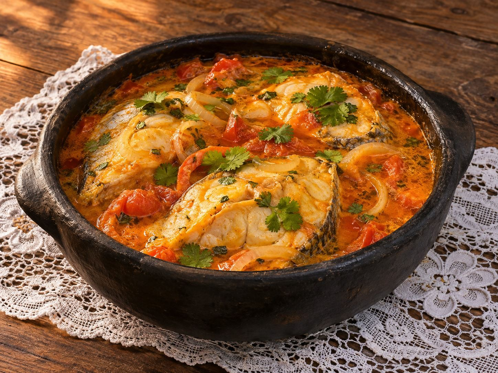
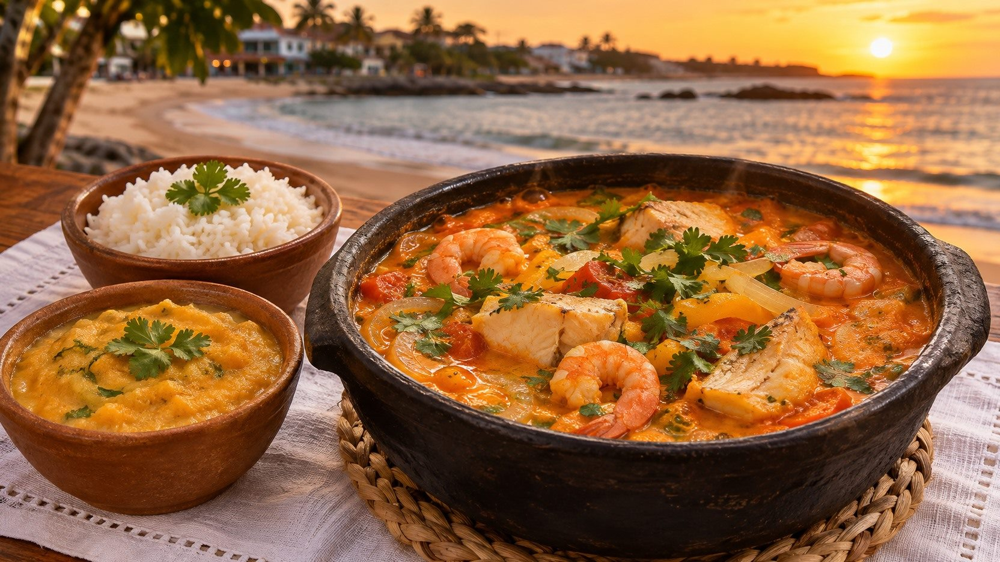
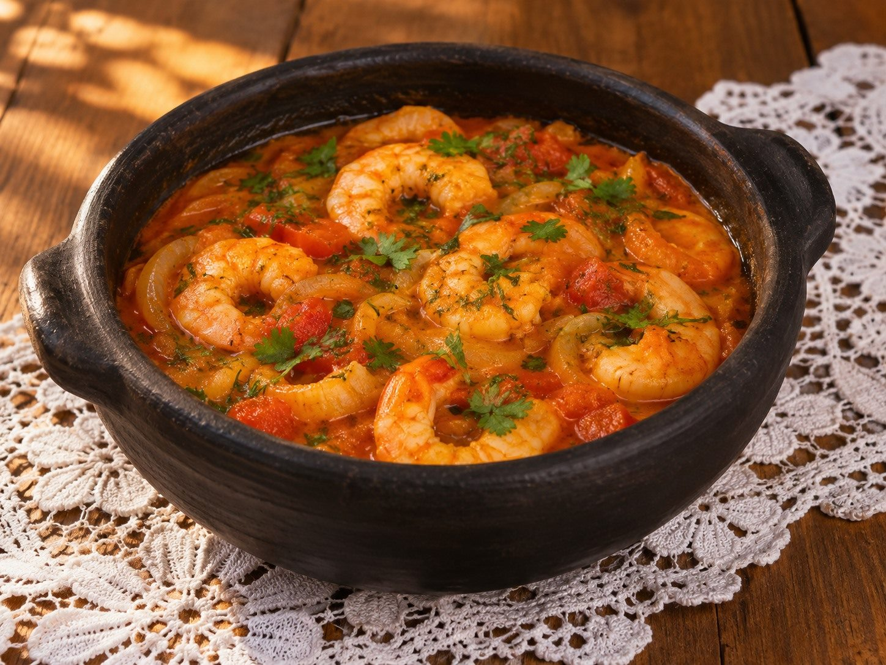
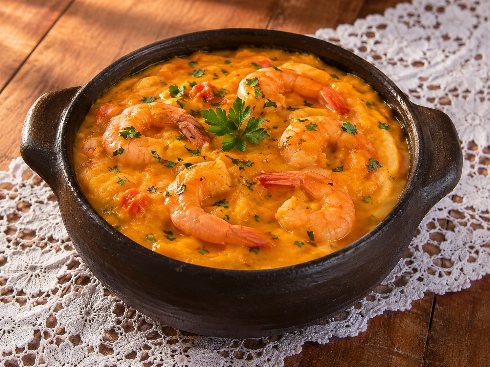
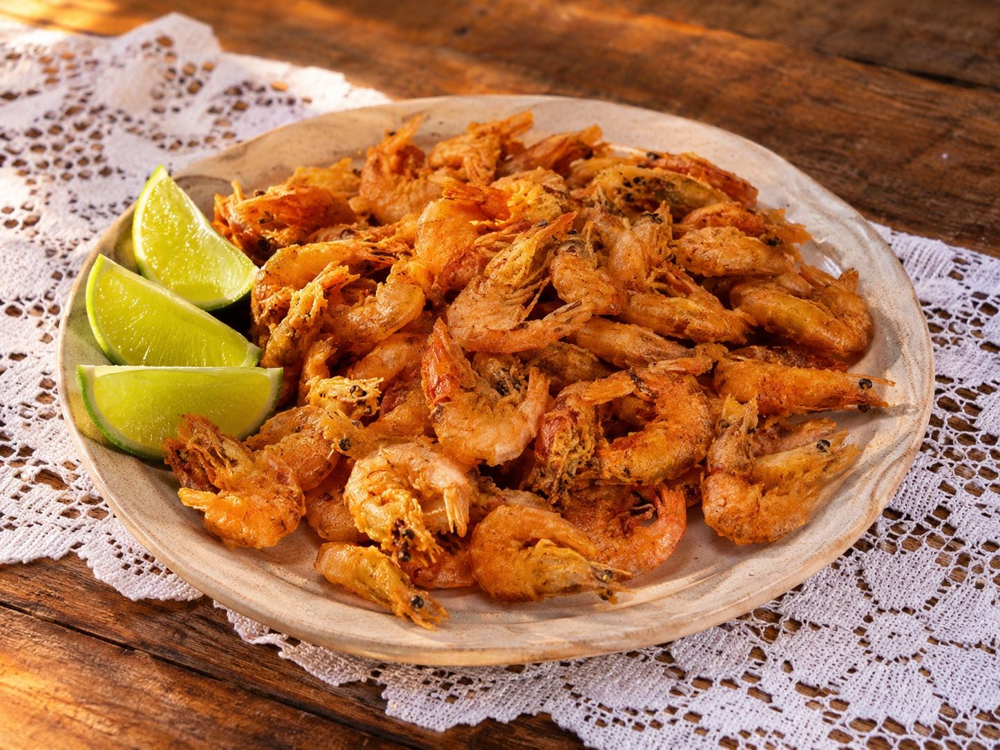
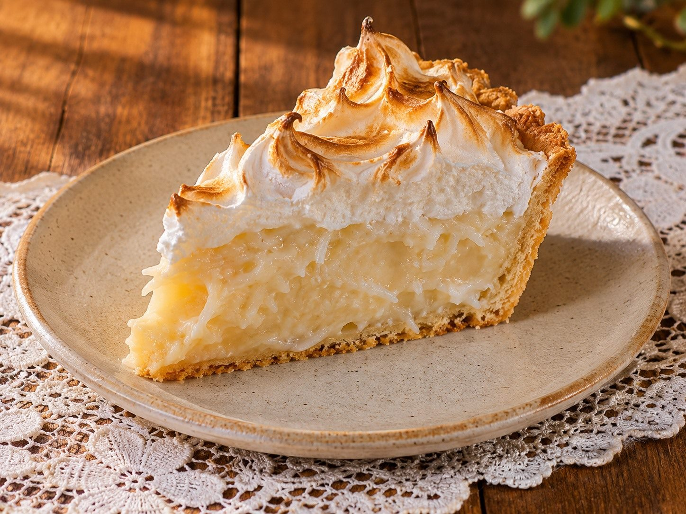
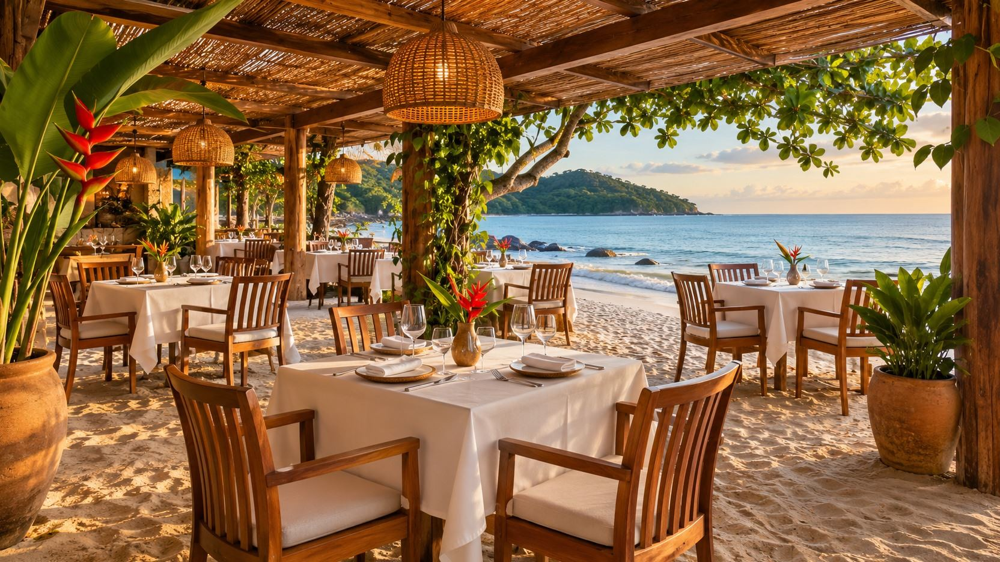
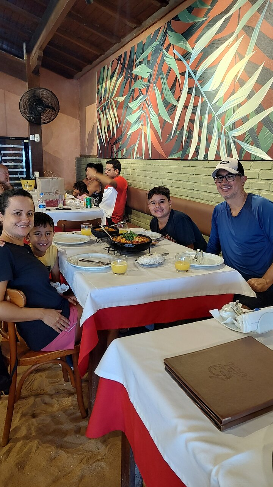

Moqueca de badejo
Badejo em panela de barro, com arroz, pirão de peixe e moquequinha de banana-da-terra.
Panela de barro, frutos do mar e mesas na areia, de frente para a Praia de Meaípe, em Guarapari.

Moquecas em panela de barro, frutos do mar e a torta de coco do Curuca. Imagens ilustrativas.

Badejo em panela de barro, com arroz, pirão de peixe e moquequinha de banana-da-terra.

Camarão rosa na panela de barro. A versão mista combina peixe e camarão.

Camarão rosa servido em creme aveludado.

Porção de camarões pequenos fritos, servida como entrada.

Creme de coco coberto com suspiro.

Nos anos 1970, Jailton Nascimento, conhecido como Curuca, começou vendendo churrasquinhos numa barraca à beira-mar.
O restaurante tem mais de 35 anos de história. A família segue à frente da casa, onde a moqueca é servida em panela de barro.

De frente para a Praia de Meaípe, a casa serve porções para compartilhar e tem mesas na areia.
“A melhor moqueca da região.”
Josué V. · Tripadvisor
“Vista de restaurante para a praia — inesquecível.”
Kasia an. · Google
“Comida muito saborosa e farta.”
CidaCosta · Tripadvisor